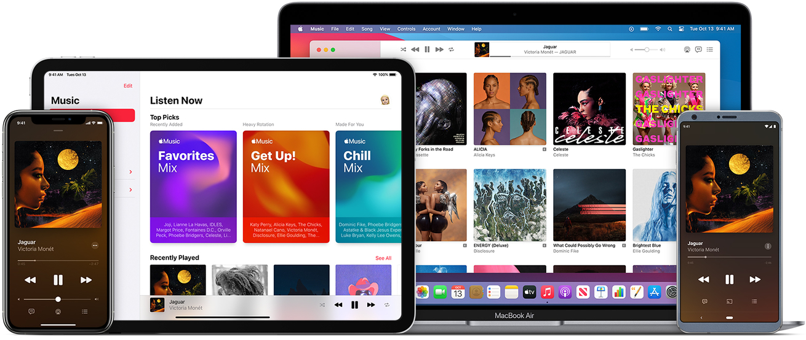

History of Apple Music
Apple Music is a relatively new term to call Apple’s music industry ventures. Apple dominated the streaming waves through products like the iPod, iPod touch, or iPod Nano. They created the premiere way of listening to music that slingshotted the music industry into streaming as we know it today. The former name for their music service was iTunes and it began in 2001 and allowed users to pay about $1.29 per song they downloaded – you needed to download the music in order to listen to it.
After 18 years in service, Apple decided to end iTunes as we know it in order to fully focus on a rebrand of the platform to Apple Music. Apple Music was made to directly compete with companies like Spotify that were stealing customers from Apple’s iTunes. It was first established in 2015, almost 9 years after the beginning of Spotify.
The features of Apple Music are very similar to that of Spotify with minor differences around the edges. So, much of the features on Apple Music are not innovative in the sense that they are trying to improve upon the foundation that apps like Spotify have created.
However, they have added features such as being able to find songs based on lyrics. Apple music currently has over 72 million active listeners and over 70 million tracks. They continue to compete with Spotify to be the top streaming platform.
Apple Music Pros vs. Cons
Pros
- Connects seamlessly with Apple Car Play in newer vehicles
- Enormous music collection
- Exclusive media content deals with Beats 1 Radio
- Easy Apple device integration (computer, phone, etc.)
- Student discount
- Artists can connect with audience through social media features
- Search songs by lyrics
Cons
- No free version
- Poor music discovery features
- Student discount does not include extra features
- User interface is not well liked
